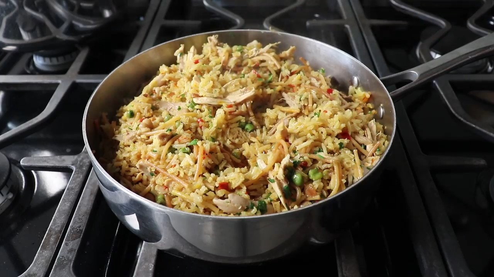

Chicken Rice-a-Roni
Description
- Preparation time: 35 mins
- Additional: 25 mins
- Cook: 2 hours
- Total: 3 hours
- Servings: 4
- Yield: 4 servings
Ingerdients
- 1 (3 1/2) pound whole chicken
- 1 stalk celery, roughly chopped
- 1 medium carrot, roughly chopped
- ½ medium yellow onion, roughly chopped
- 1 large bay leaf
- 1 tablespoon kosher salt
- 3 quarts water
- 2 tablespoons butter
- ½ medium yellow onion, diced
- ⅓ cup diced red bell pepper
- 2 teaspoons kosher salt
- ½ medium yellow onion, diced
- ⅓ cup diced red bell pepper
- 2 teaspoons kosher salt
- 1 cup broken uncooked spaghetti (2-inch pieces)
- 1 ½ cups basmati rice
- ¼ teaspoon freshly ground black pepper
- ¼ teaspoon dried oregano
- ½ teaspoon ground cumin
- ½ teaspoon saffron threads, crushed (Optional)
- 1 pinch cayenne pepper
- ½ cup garbanzo beans, drained and rinsed
- ⅓ cup frozen green peas, thawed and drained
- 2 tablespoons chopped fresh parsley, or to taste
- 2 tablespoons chopped fresh cilantro, or to taste
Steps
- Place chicken, celery, carrot, onion, and bay leaf in a stockpot and cover with water. Set over high heat, add salt, and bring to a simmer. Reduce heat to medium-low and simmer until the thighs and legs can be pulled easily from the carcass, about 1 hour and 15 minutes. Remove chicken to a bowl, carefully tipping the carcass to drain any broth from the cavity back into the stockpot.
- Let meat sit until it's cool enough to handle, 15 to 20 minutes. Separate skin, bones, and meat. Set aside 2 cups shredded meat (white, dark, or a combination of the two) for rice-a-roni and reserve the rest for another use.
- Transfer skin and bones back to the stockpot with the broth and simmer for 1 to 2 hours or until you need it. Strain.
- Combine oil and butter in a skillet over medium-high heat. When hot and melted, add onion, bell pepper, and salt. Cook and stir until onion just starts to turn translucent, 3 to 4 minutes. Add broken spaghetti and cook until toasted and light golden brown to dark brown in color, about 3 minutes; it's okay if the onions and peppers start to caramelize.
- Add rice and stir until completely coated. Add pepper, oregano, cumin, and saffron. Stir in 3 ½ cups chicken broth. Add cayenne, garbanzo beans, peas, and shredded chicken and return to a simmer.
- Cover tightly with a lid, reduce heat to medium-low, and cook for 15 minutes; do not lift the lid or stir during this time.
- Remove the lid and check the rice in a couple spots. It should be just barely tender. (If it seems undercooked, you can cover and cook for a few more minutes.) Replace the lid, turn off the heat, and let rice sit for 10 minutes.
- Sprinkle parsley and cilantro over top and stir to combine. Check for seasoning and serve immediately.